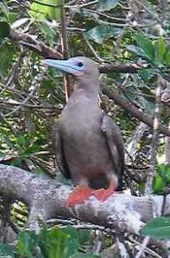
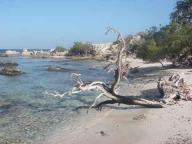

|


|
Aves de Barlovento
» exacte locatie
 De afgelopen tijd hebben we steeds forse wind gehad. Vooral 's nachts. De eerste nacht voor anker bij Caya de Agua leek het wel alsof we in een halve storm lagen. Maar juist toen we weer verder gingen zeilen ging de wind liggen. Onze volgende bestemming was Aves de Barlovento, weer een onbewoond eilandje van Venezuela. En de tocht erheen was erg sloom, ondanks dat we al het zeil dat we hadden erop hebben gezet. En met weinig wind is het ook meteen erg warm. Een beetje onderuitgezakt zaten we in een
hoekje onder de buiskap waar nog net iets schaduw te vinden was, terwijl de boot traag doorwaggelde over de golven. Pffff.... Later kwam er iets meer wind en toen we vlak bij Aves waren was het ineens weer aktie: er was weer wat serieuzere wind, de zeilen mochten naar beneden, tegelijkertijd goed uitkijken naar de ondiepe riffen waar we tussendoor moesten en op dat moment ook nog tik tik trrrrr (geluid vismolentje) een vis die het aas gepakt had. We hebben het anker uitgegooid vlak bij een mooi mangrovebos.
En in dat bos zitten echt ontzettend veel vogels. Je hoort continu de geluiden die al die vogels maken en dat zijn andere geluiden dan die Nederlandse vogels maken. Af en toe zelfs een beetje aap-achtig. De volgende dag zijn we naar de mangrove gezwommen om met het fototoestel al wadend langs de bomen een paar mooie foto's van de vogels te maken. We zijn dan wel weer erg blij met ons waterdichte fototoestel. En het is gelukt om de roodvoetige booby er goed op te krijgen. Vanmiddag gaat Ilse wat aardappels
met rozemarijn voor ons bakken (die ze tegenwoordig precies zo kan laten smaken als die dure celavita pakjes bij de supermarkt) en daarna vertrekken we richtig Curacao. Terug naar de bewoonde wereld.
De afgelopen tijd hebben we steeds forse wind gehad. Vooral 's nachts. De eerste nacht voor anker bij Caya de Agua leek het wel alsof we in een halve storm lagen. Maar juist toen we weer verder gingen zeilen ging de wind liggen. Onze volgende bestemming was Aves de Barlovento, weer een onbewoond eilandje van Venezuela. En de tocht erheen was erg sloom, ondanks dat we al het zeil dat we hadden erop hebben gezet. En met weinig wind is het ook meteen erg warm. Een beetje onderuitgezakt zaten we in een
hoekje onder de buiskap waar nog net iets schaduw te vinden was, terwijl de boot traag doorwaggelde over de golven. Pffff.... Later kwam er iets meer wind en toen we vlak bij Aves waren was het ineens weer aktie: er was weer wat serieuzere wind, de zeilen mochten naar beneden, tegelijkertijd goed uitkijken naar de ondiepe riffen waar we tussendoor moesten en op dat moment ook nog tik tik trrrrr (geluid vismolentje) een vis die het aas gepakt had. We hebben het anker uitgegooid vlak bij een mooi mangrovebos.
En in dat bos zitten echt ontzettend veel vogels. Je hoort continu de geluiden die al die vogels maken en dat zijn andere geluiden dan die Nederlandse vogels maken. Af en toe zelfs een beetje aap-achtig. De volgende dag zijn we naar de mangrove gezwommen om met het fototoestel al wadend langs de bomen een paar mooie foto's van de vogels te maken. We zijn dan wel weer erg blij met ons waterdichte fototoestel. En het is gelukt om de roodvoetige booby er goed op te krijgen. Vanmiddag gaat Ilse wat aardappels
met rozemarijn voor ons bakken (die ze tegenwoordig precies zo kan laten smaken als die dure celavita pakjes bij de supermarkt) en daarna vertrekken we richtig Curacao. Terug naar de bewoonde wereld.

|
|
|

Los Roques
» exacte locatie
"Enter between the Coral Island and West Cay and head for the northeastern point of Cayo de Aqua. After that just eyeball your way between the reefs." Juist ja, de oogbal-navigatie werkt hier nog het best! Gister zijn we aan de oostkant van de eilandengroep Los Roques aangekomen. Aan de oostkant een rif van 10 mijl (18 km) waar de golven op breken. Daarachter bevinden zich meerdere riffen en eilandjes met mangrovebos er op. In het noorden en westen liggen meer eilandjes en het middelste stuk is niet
in kaart gebracht. Leuk voor de echte avonturier. De entree in het oosten vonden we wel avontuurlijk genoeg. Ik vond het wel erg spannend, een smalle doorgang tussen de riffen, maar Joost voer stoer door. Toen de golven wat bedaarden konden we de riffen en ondieptes goed zien en met behulp van een kaartje hadden we snel een ankerplek gevonden, heerlijk na een ruig nachtje doorzeilen weer stil te liggen. Vandaag konden we heel lang langs het rif varen en daarna voeren we tussen de noordelijke eilandjes
door. Zeilen zonder golven! Na een lekkere dagtocht mochten we nog even puzzelen om onze ankerplek te vinden bij Cayo de Aqua. 'Laten we de westpunt van Elbert Cay in lijn houden met de palmbomen' zei ik maar we konden de palmbomen niet goed zien. Dan anders... Joost stelde voor om na entree de lijn van Coral Island naar het zuidelijke puntje van Bequev=e9 in de gaten te houden, dan wisten we ook waar we ons op het kaartje bevonden. We werden steeds creatiever in het maken van lijnen om te volgen om
de ondieptes met rotsen te vermijden. Ondertussen waren we wel aan de wind aan het zeilen (dat is bijna tegen de wind in en dan ga je best schuin) met windkracht 6. Op het voordek liet ik de fok en het grootzeil zakken. Daarna naar de boegspriet voor op de boot om het borglijntje van het anker los te maken (zo kan het anker niet per ongeluk vallen tijdens het varen) even genieten en de nieuwe omgeving in me opnemen. Het is ons gelukt! We hebben het anker laten vallen bij een nieuw paradijsje en liggen
hier als enige boot. Vlakbij duiken pelikanen in het water om visjes te vangen, nou ja, duiken... ze vliegen sierlijk en opeens laten ze zich lomp neerstorten, spreiden vleugels om de val te breken en dobberen daarna als een zwaan genietend van een visje. Op de foto zie je ons 'schatkaartje' die noemen we zo omdat de kaartjes ons steeds weer naar een ander mooi plekje leiden. En nee, we zijn nog steeds niet gecontroleerd!
|
|
|
Blanquilla
» exacte locatie
Zoals al een beetje aangekondigd zijn we toch bij het volgende eiland van Venezuela gaan liggen. Deze heet La Blanquilla. Onze papieren zijn dus eigenlijk niet echt in orde, maar de kans op controle schijnt erg klein te zijn. Tot onze (enige) buren vertelden dat ze al meteen op de eerste dag waren gecontroleerd en dat ze zelfs met de terreinwagen rond het eiland crossen om te zien of er nog nieuwe boten bij zijn gekomen... Maar volgens hen waren deze mannen wel heel vriendelijk (ook al hebben ze
geweren) en waren ze vorig jaar met oud en nieuw zelfs uitgenodigd om dat met hen te vieren. We zien wel wat er gebeurt als ze langskomen, we hopen dat we hooguit weggestuurd worden zoals op het vorige eiland. De avond hebben we gisteren doorgebracht aan boord bij de buren en ik durf nu toch wel een algemene stelling te maken over onze mede-cruisers aan deze kant van de oceaan: gepensioneerde stellen met een interessant leven. Dit stel was 70 en had een hotel/bootverhuur gerund op de Hebrides van
Schotland. Het leeftijdsverschil met ons is groot, maar een avond als gisteren was toch wel echt gezellig. We hebben weer veel over Venezuela gehoord. Over overdreven piratenverhalen, yuppen die even invliegen voor een weekendje feest op een afgelegen eiland en goedkoop winkelen op Isla Margarita. Dat eiland hebben we dus overgeslagen en daarmee ook blikjes bier van 20 eurocent, flessen Schotse whisky voor 3 euro, diesel voor 1,7 eurocent per liter en Argentijnse biefstuk voor weinig. Als troost
kregen we toen we weer terug naar onze boot gingen nog wel twee van die flessen whisky kado! Dat was wel erg aardig van ze. Vanmorgen hebben we een eilandwandeling gemaakt naar een fraaie baai die toch wat verder weg lag dan gedacht. Heen liepen we langs het strand en terug wat meer het land in. Maar daar stonden zo ontzettend veel kaktussen dat we halverwege toch maar weer de strandroute hebben gepakt. Die kaktussen zien er uit als op de kaktusafdeling van de Intratuin, maar dan met zeer agressieve
naalden. Je hoeft maar per ongeluk met je been langs zo'n kaktus te aaien en er breekt meteen een deel van een paar centimeter van de kaktus af met rondom een stuk of twintig naalden waarvan er dan drie in je been steken en daar blijft het geheel aan hangen. En die naalden moet je er echt met brute kracht uittrekken (zonder weer je hand in andere naalden te zetten), want ze lijken wel weerhaakjes en lijm te hebben. Ze zitten zo serieus vast als een haar op je hoofd. Maar de wandeling was prachtig.
Morgen vluchten we hier weer weg en gaan we voor de derde keer een nachtje doorzeilen naar Los Roques, waar ankerplaatsen zijn waar echt niet gecontroleerd wordt (zegt men).

|
|
|
Los Testigos
» exacte locatie
Afgelopen vrijdag zijn we boodschappen wezen doen. Dat deden we in een stadje even verderop waar we met een busje heen gingen. Zo'n busje stoppen ze helemaal vol door middel van geimproviseerde zitplekken en voor slechts vijftig eurocent kun je mee. We hebben flink wat rondgelopen maar uiteindelijk hadden we slechts 4 items van de 20 gescoord. Daar wen je aan, echt. Zulke moeilijke dingen waren het echt niet maar we zijn gewoon verwend in Nederland. Joost heeft uiteraard nog meer visspullen gekocht.
Dit keer verschillende kleuren inktvisjes zodat je zelf een aantrekkelijke grotere bonte inktvis kunt creeeren. Weer thuis betaalde we de prijs voor het in de hitte lopen zonder petje... Beiden kregen we tegelijk enorme hoofdpijn, zonnesteekje, echt niet fijn. Verder middag en avond slapend doorgebracht en dat hielp, gelukkig. Volgende dag wilden we 'even' gaan tanken. Na 35 meter ankerketting opgetakeld te hebben kreeg ik zowaar applaus van onze buren (het waaide hard en meestal doen mannen dat
werk) waarna we gingen bedenken hoe we zonder schade te maken aan een heel duur mega-zeiljacht konden aanleggen aan de tanksteiger. Dat moest namelijk op z'n Italiaans. Voor anker uit en dan met de kont achteruit aanleggen. Nooit eerder gedaan met Hafskip. Dat megajacht was gebouwd in Nederland en was van een 85 jaar oude man die wat bemanning had ingehuurd. Best een beetje spannend natuurlijk maar met wat hulp van de kant ging het helemaal goed! Het mega-jacht was nog heel ;-). Daarna een stukje
verderop geankerd naast de Klef, die hadden we sinds Spanje niet meer gezien. Heel toevallig net aangekomen en Edo had ons de dag ervoor uitgenodigd. Dat werd een erg gezellige middag, flink bijgekletst. De middag ging over in avond en de volle maan werd ineens oranje, gek maar verder geen aandacht aan besteed. Onze lier miste een veertje waardoor die het niet goed deed. Edo was onze redder in nood want hij had er nog een paar. Eentje was precies goed en paste! We zijn dus erg blij. Na nog een laatste
koffie terug naar de boot. Bij het opruimen van het bijbootje zagen we ineens dat de maan verduisterd werd! De aarde kwam tussen de zon en de maan. Echt supermooi gezicht! De volle maan was bijna helemaal weg en kwam heel langzaam weer te voorschijn. In de baai de zeilen gehesen en koers gezet naar Los Testigos, een eiland voor de kust van Venezuela. In het begin vond ik het weer even spannend, gekke golven, al die geluiden. Het maakt het slapen lastig. We hadden een prachtige nacht, de maan gaf
veel licht, ruime wind, stroming mee, super. Een vreemd flubber flabber spartel geluid deed mij ontwaken 's ochtends. Joost had namelijk met z'n nieuwe inktvisjes (combi wit-rose) een mahi mahi gevangen! Een enorm ding. Na fileren nog veel te veel voor ons. De aanloop liep mooi tussen wat eilandjes door en we hebben sinds lange tijd weer dolfijnen naast de boot gehad! Anker uitgegooid in een rollerig baaitje en met de bijboot naar de steiger. Het laatste stuk steiger ontbrak dus goed getimed er vanaf
gesprongen vanwege de branding. Niet al te nat liepen we naar de guardiacosta (kustwacht). Ze waren niet zo blij met ons uitklaringsbewijs van Grenada. We hadden er namelijk Cura=e7ao op laten zetten (als volgende haven) omdat we wel de afgelegen eilanden van Venezuala wilden bezoeken maar geen zin hadden om duur in te checken op Margarita (90 dollar), dat eiland ligt ook op de route maar slaan we liever over. We hadden gehoord dat ze het wel toestaan om op al die eilandjes 48 uur illegaal te liggen.
Zo kun je al eiland-hoppend naar de ABC-eilanden. We kregen 24 uur en moeten dan meteen naar Cura=e7ao. Dat is wel jammer. Maar ik denk dat we stiekum toch nog bij een paar andere eilanden gaan liggen zonder ons te melden en als ze langskomen (wat waarschijnlijk toch niet gebeurt, er woont bijna niemand) zeggen we gewoon dat we even wilden uitrusten of zo. Na het aanmelden naar de baai verhuist met de meeste boten en hebben we meteen vrienden gemaakt. We hebben onze vis gedeeld met twee andere boten
(Canadees) en die vonden het de beste vis van de oceaan! Bij de ene boot kregen we meteen een drankje aangeboden en leuk mee gepraat en van de andere boot maakte zij een mooie ketting voor me van een stuk door de zee afgerond glas. Erg leuk. Boven ons hoofd vliegen heel veel verschillende vogels met prehistorische vleugels en in het water zwemmen piepkleine rode garnaaltjes en... kwallen. Toch maar niet een duikje gemaakt.
|
|
|

|

|
|
|